For people who want to keep the pages they use often, sorted by project.
New group
Create a group with a name, description, color and icon
Where: “＋ New group” / Ctrl+N
Click “＋ New group” (or press Ctrl+N) to create a group. Give it a name, description, color and icon. You can change them later. The free plan allows up to 5 groups.
Click “＋” on a group's row and the page you're viewing goes into that group. With “Add current tab” at the bottom, you choose which group it goes into. If the page is already in another group, you'll be asked to confirm.
Open a group's pages together. They also become a Chrome tab group
Where: A group's row
Click ▶ on a group to open all its saved pages together. The opened tabs are gathered into a Chrome tab group. Click ■ to close that group's tabs together. Your bookmarks stay even after the tabs are closed.
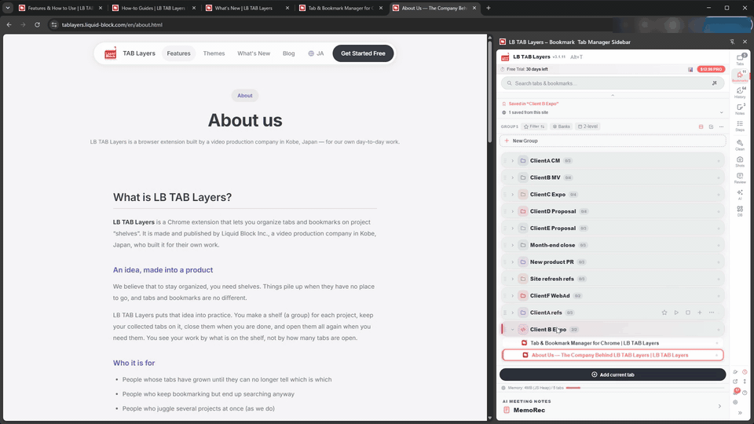
Close all tabs ■
Close the opened tabs together. The bookmarks stay
Where: A group's row
Click ▶ on a group to open all its saved pages together. The opened tabs are gathered into a Chrome tab group. Click ■ to close that group's tabs together. Your bookmarks stay even after the tabs are closed.
Click to expand or collapse. Double-click to rename. Edit to change the color and icon
Where: A group's row / “…”
Click a group's row to expand or collapse it. Double-click the name to rename it. From “Edit (name, icon, color)” under “…”, change the color, icon and description.
Working with saved tabs
Click to open (or switch to it if it's already open). Close, rename or remove
Where: A row inside a group
Click a row inside a group to open that page. If it's already open, you switch to that tab. The buttons on the row let you rename it, close its tab, or remove it from the group. Right after removing it, click “Undo” to bring it back.
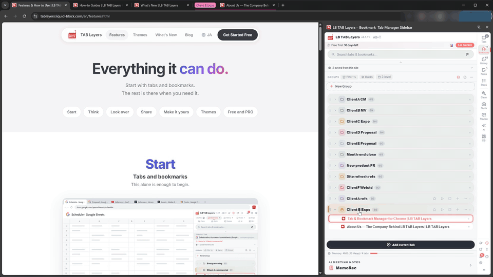
★ Ratings & filter
Give groups and tabs 1 to 5 stars, and filter by stars
Where: ★ on a row / “Filter” at the top
Give groups and pages a rating of 1 to 5 stars. Use “Filter” at the top to show only items with a given number of stars.
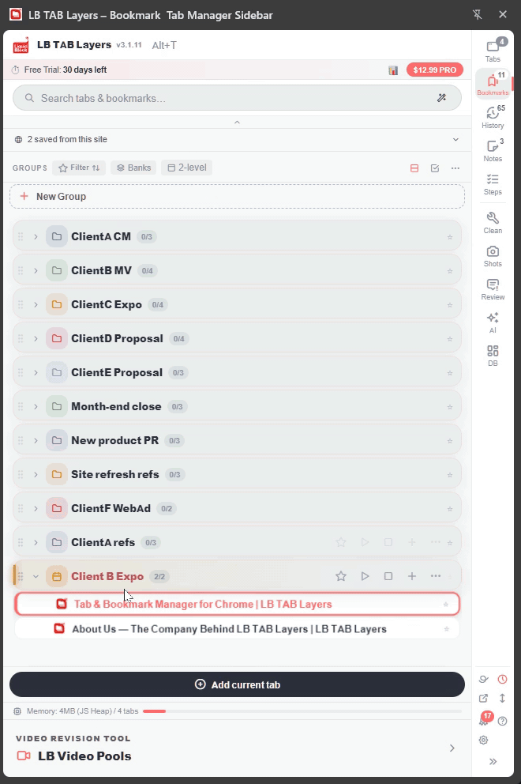
Reorder & subgroups
Drag to change the order. Drop onto the middle of a group to nest it
Where: The handle at the left of a row
Drag the handle at the left of a group to change its order. Drop it onto the middle of another group and it becomes a group inside that group (a subgroup).
From a group's “…” or its right-click menu, add a labeled divider line between groups. Useful for separating work from personal, for example.
Banks
Split your groups into up to 10 sets and switch between them (Alt+1 to Alt+0)
Where: “Banks” at the top
A bank is a set of groups. You can have up to 10 and switch between them with Alt+1 to Alt+0. Keep only the groups you need right now in view: work and personal, or one bank per project phase.
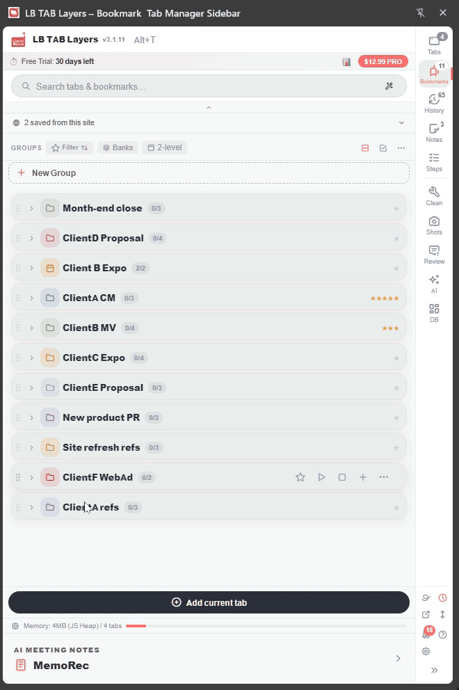
2-level
Show groups as tabs across the top, with only the selected one below
Where: “2-level” at the top
Turn on “2-level” and your groups appear as a row of tabs at the top, with only the selected group's contents below. The list stays short even when you have many groups.
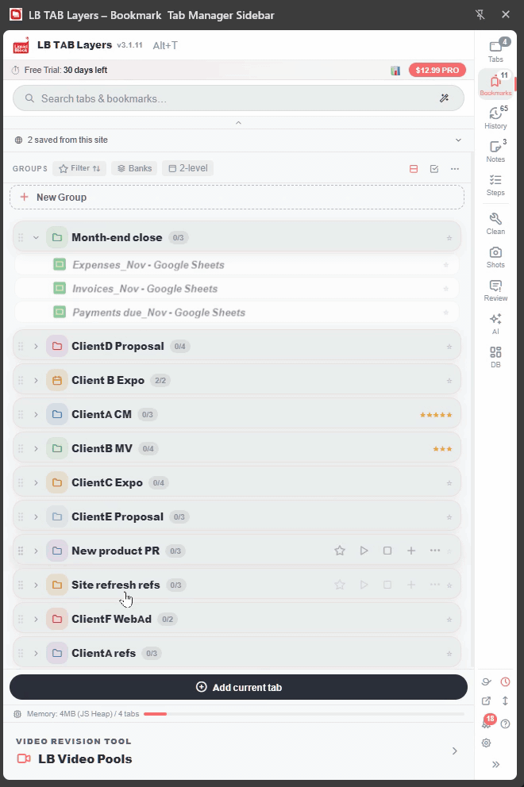
Folder view
See groups as folder icons, like a file explorer
Where: “…” › Show as folders
Choose “Show as folders” from “…” to lay out your groups as folder icons, like the folders on your computer. Click a folder to see the pages inside.
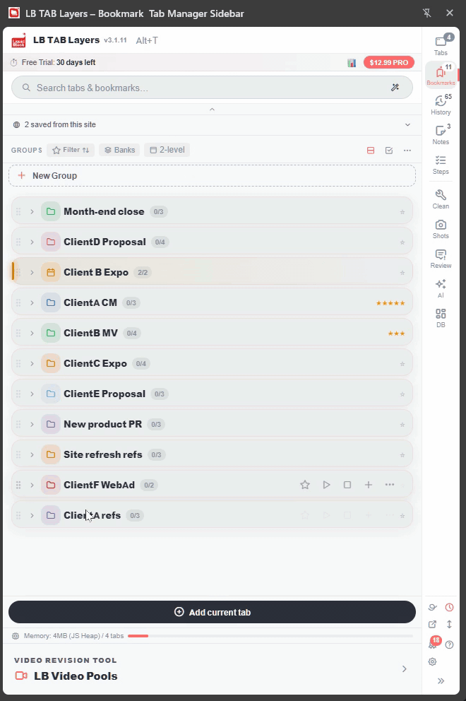
Archive
Put finished groups away without deleting them. Bring them back later
Where: A group's “…”
When a group is finished, put it away with “Archive” under “…”. It disappears from the list, but its contents are kept and you can restore it later.
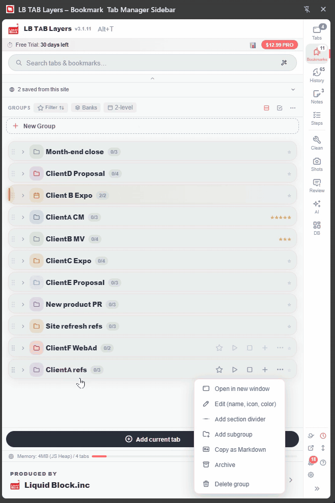
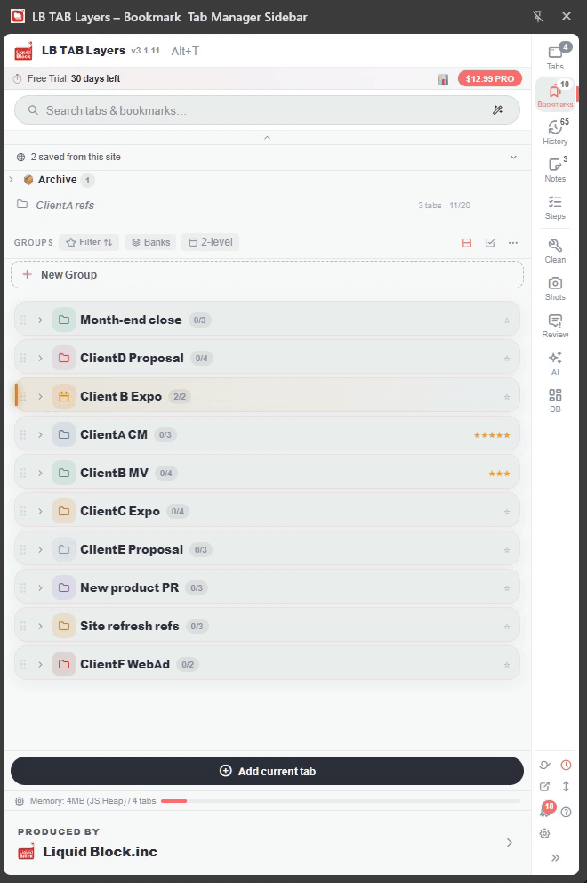
Delete & Trash
Deleted items stay in the Trash for 30 days. Right after deleting, just click “Undo”
Where: “…” / right-click
Deleted groups and pages stay in the Trash for 30 days and can be restored during that time. Right after deleting, just click “Undo” to bring them back.
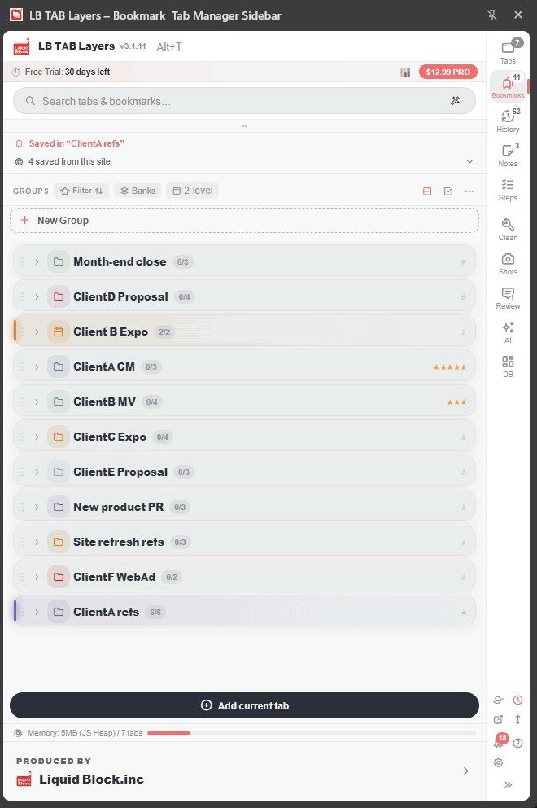
Select mode
Select several items and rate, move, close or trash them together
Where: The check button at the top / long-press a row
Click the check button at the top (or long-press a row) to enter select mode. Select several pages or groups, then rate them, move them, close their tabs or send them to the Trash together.
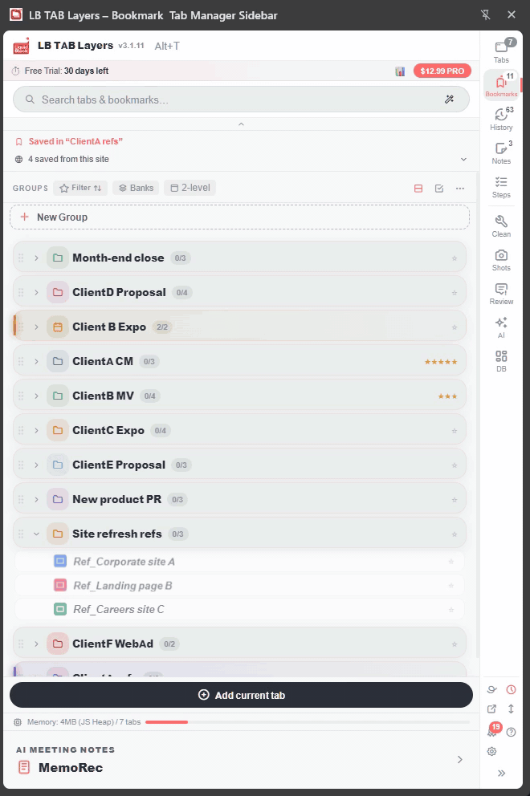
Save from the right-click menu
Right-click a web page or link and put it into a group. Works even with the panel closed
Where: Right-click on a page
Right-click a web page or a link, and choose a group from “LB TAB Layers”. It works even when the panel is closed.
Even with the panel closed, you can file a page into a group from the right-click menu.
Press Ctrl+Shift+S to drop the current page straight into the “Sort later” group. Handy when you'd rather decide where it goes later.
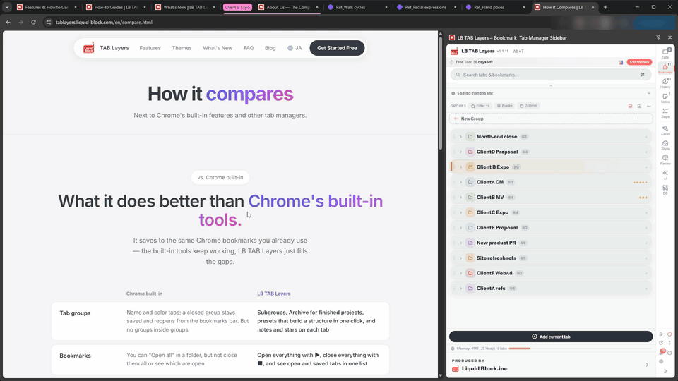
Paste URLs to add
Paste copied URLs with Ctrl+V, then choose a group (up to 50 at once)
Where: Ctrl+V over the panel
Paste copied URLs over the panel with Ctrl+V and you'll be asked which group to put them in. You can add up to 50 at once. Page titles are filled in by reading each URL.
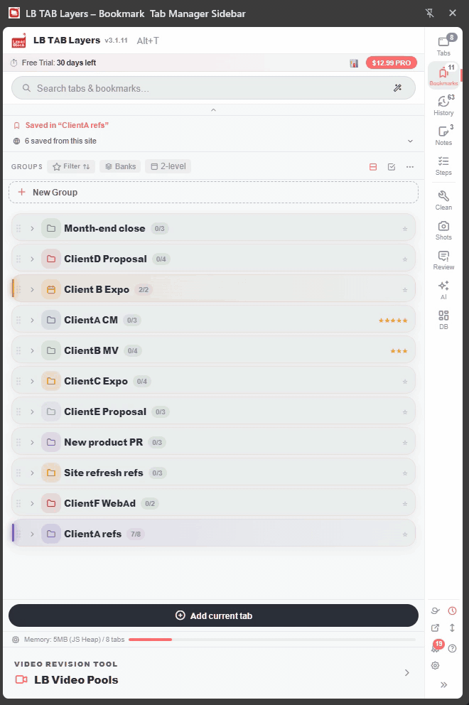
Saved mark PRO
On saved pages, the extension icon shows ✓. The panel also shows “Saved” and how many pages you've saved from the same site
Where: Automatic
Open a page you've saved and the extension icon gets a ✓, while the top of the panel shows “Saved” with the name of the group it's in. You can also see how many pages from the same site you've saved. PRO feature (available during the free trial).
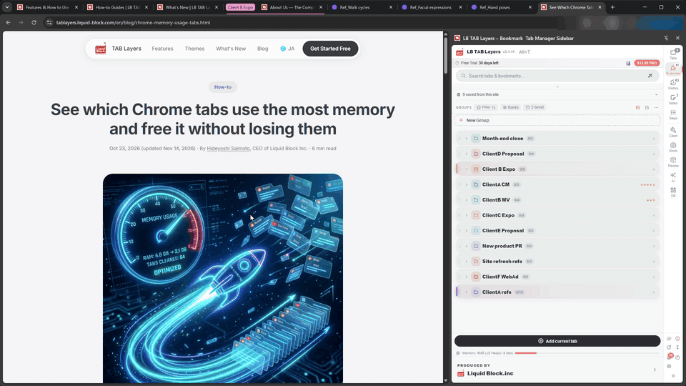
Pin bar
Line up the sites you use most as icons at the top (up to 12)
Where: Top of the panel
The pin bar holds up to 12 of the sites you use most, as icons. Click one to open the site (or switch to its tab if it's already open).
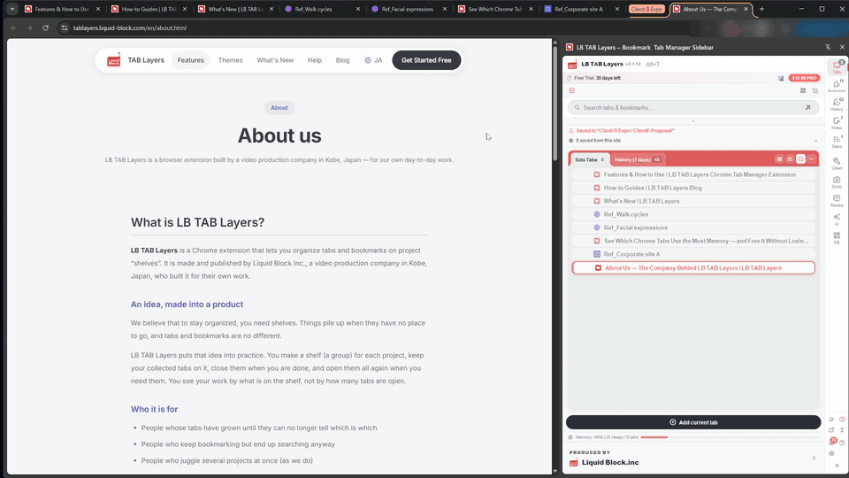
Line up the sites you use most as icons at the top, and open them in one click.
Kept in Chrome's bookmarks
Groups are ordinary Chrome bookmark folders. They remain even if you remove the extension
Where: How it works
Groups are saved as folders in Chrome's bookmarks. Even if you disable or remove the extension, your bookmarks remain in Chrome. If you use Chrome sync, they reach your other computers too.
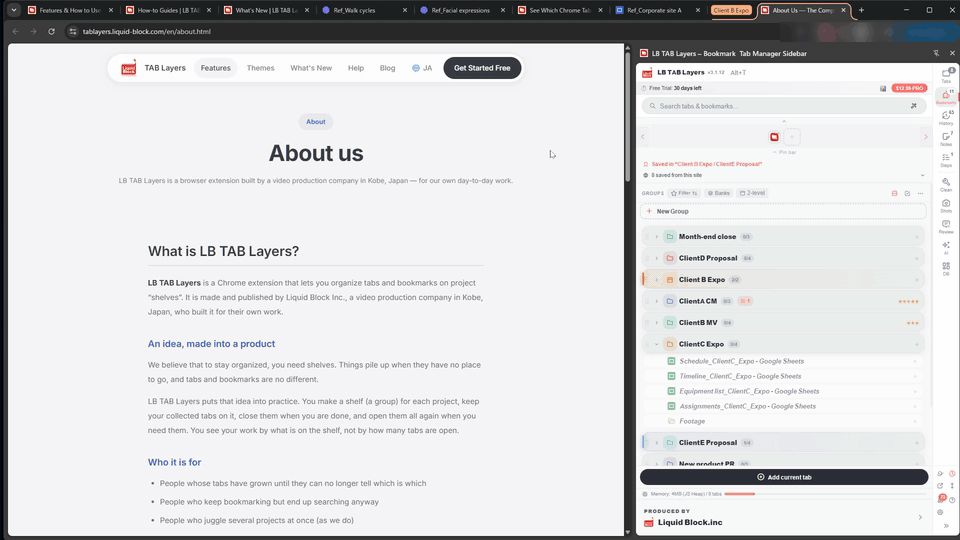
Groups are Chrome bookmark folders, so they stay even if you remove the extension.
Split
Open two pages side by side
Where: Right-click a saved tab
From the right-click menu of a saved page, open two pages side by side. Good for working while you compare.
PC folders
Keep the location of a folder on your PC or NAS as a row. Click it to copy the path
Where: Right-click a group
Choose “Add a folder on this PC” from a group's right-click menu to keep the location of a folder on your PC or NAS as a row. Click the row to copy the path, then paste it into File Explorer to open the folder. Keep a project's file location together with its pages.
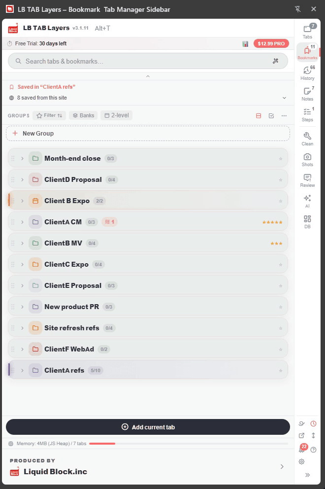
Folder templates
Create sets such as “Client projects” or “Accounting & admin” in one go. Save your own sets too
Where: Right-click an empty area
Right-click an empty area of the group list to create a whole set of groups from a template such as “Client projects” or “Accounting & admin”. You can also save your current set of groups as your own template. The free plan allows up to 5 groups.
Create a whole set of groups at once, for a client project or for accounting.
Open in new window
Open a group in a separate window
Where: A group's “…”
From a group's “…”, open all of that group's pages in a separate window. Work with one window per project.